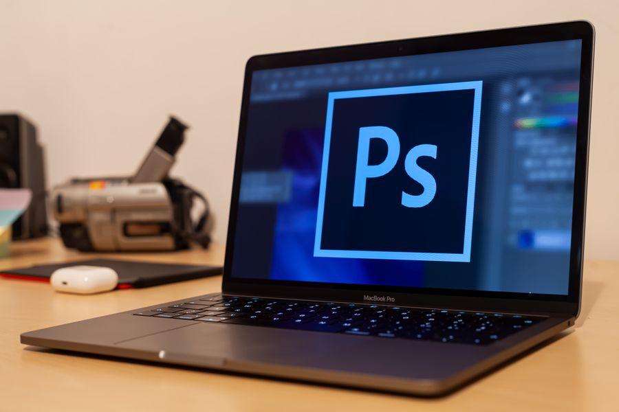

Made for university life
The right laptop for your next big idea.
Compare what matters: price, battery life, memory, and weight. Save your favorites and decide with confidence.

Search smarter. Study better.Built for students
At a glance
Updated from the laptop listLoading statistics…
A few laptops to start with
Browse the catalogue for more choices.
How it works
01 · Explore
Search by brand and filter by your budget.
02 · Save
Keep your favorite laptops in one place.
03 · Compare
Compare up to four laptops side by side.